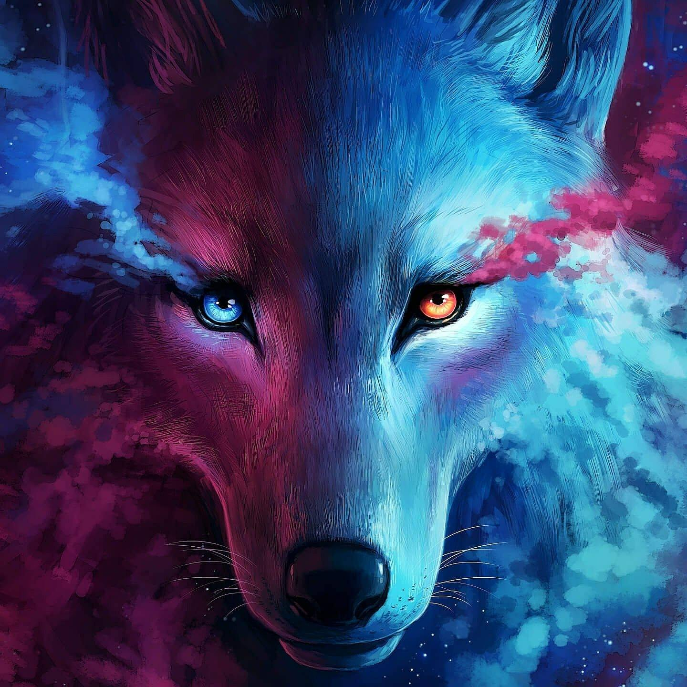
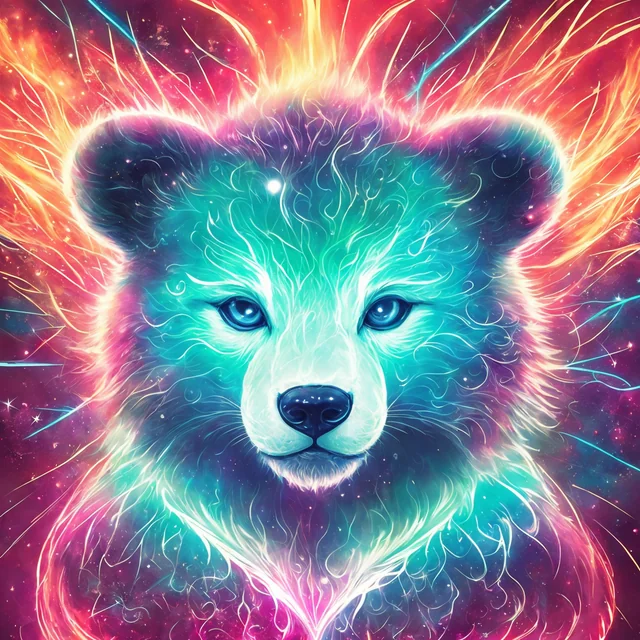
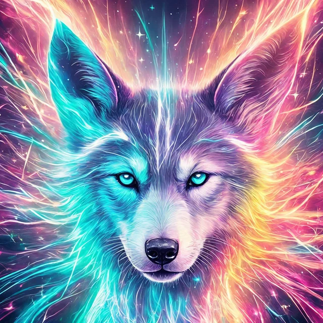

Magical Animals
Wolf
Cat
Bear
Fox

Wolf is the symbol of loyalty.
Wolf
Cat is the symbol of grace.
Cat

Bear is the symbol of Courage.
Bear

Fox is the symbol of shrewdness.
Fox
 Cat is the symbol of grace.
Cat is the symbol of grace.